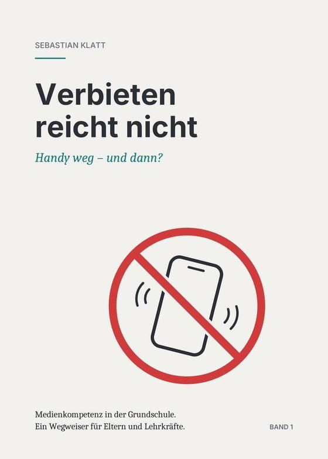

Neu erschienen · Sebastian Klatt
Verbieten
reicht nicht
Handy weg – und dann?
„Nur noch fünf Minuten.“ Dann die Tränen, dann die Tür. Und hinterher die Frage, die bleibt: War das jetzt richtig?
Der Wegweiser für Eltern und Lehrkräfte von Kindern zwischen 6 und 12.

Worum es geht
Handy weg ist schnell gesagt. Aber was kommt danach?
Für Eltern und Lehrkräfte, die mehr wollen als Verbote – und keine Zeit haben für Patentrezepte, die im Alltag nicht funktionieren.
Das Buch zeigt, was Kinder zwischen sechs und zwölf wirklich mit Medien tun, was Handyverbote leisten und wo sie aufhören zu wirken. Und es zeigt, wie aus einem Verbot Begleitung wird: mit zwölf Projekten für Klassenzimmer und Küchentisch.
Was Sie mitnehmen
Vier Fragen, auf die das Buch antwortet.
- Was machen Grundschulkinder wirklich mit Medien? Zahlen statt Bauchgefühl: was Kinder nutzen, ab wann und wie lange.
- Bringen Handyverbote an Schulen etwas? Von Frankreich bis Schweden – und was in Ihrem Bundesland gilt.
- Wie erkläre ich einem Achtjährigen Werbung, KI und Datenschutz? Zwölf Projekte, jedes mit Klasse, Dauer, Fächern, Lernziel und Material.
- Was tue ich im Ernstfall? Cybermobbing, Abzocke, ungeeignete Inhalte: erste Schritte und wo es Hilfe gibt.
Blick ins Buch
Sehen Sie selbst, was Sie bekommen.


Jetzt bestellen
Heute Abend anfangen.
Kindle-Ausgabe · sofort verfügbar
- In Sekunden auf Ihrem Gerät – heute Abend auf dem Sofa, morgen in der Mittagspause.
- Kein Kindle nötig: Die kostenlose Kindle-App läuft auf Smartphone, Tablet und Computer.
Kauf und Lieferung laufen über Amazon.
Lieber auf Papier? Das Taschenbuch: 200 Seiten, 15 × 21 cm, 21,35 €.
Taschenbuch bei Amazon ↗Schon gelesen? Eine ehrliche Rezension hilft anderen Eltern bei der Entscheidung.
Rezension bei Amazon ↗Gut zu wissen
Häufige Fragen.
Was steht im Buch?
17 Kapitel in sechs Teilen, dazu ein Glossar, drei Kopiervorlagen und ein Quellenverzeichnis.
- Teil I · Warum
- Die Medienwelt der 6- bis 12-Jährigen · Was Kinder in welchem Alter verstehen · Warum Medienbildung in der Grundschule beginnen muss
- Teil II · Verbieten oder befähigen?
- Was die Forschung wirklich sagt · Handy in der Schule: Ein Kontinent experimentiert · Social-Media-Altersgrenzen weltweit · Andere Wege: Finnland, Schweden, Estland
- Teil III · Wer
- Medienbildung in Deutschland: Der Rahmen · Die Akteure
- Teil IV · Wie in der Schule
- Didaktische Grundsätze · Der Methodenkoffer für die Grundschule · Die Themen, kindgerecht erklärt · Zwölf Projekte zum Nachmachen
- Teil V · Wie zu Hause
- Medienerziehung in der Familie · Schule und Eltern gemeinsam
- Teil VI · Hilfe
- Wenn es brennt · Wegweiser: Websites und Anlaufstellen
Für wen ist das Buch – und für wen nicht?
Für Eltern von Kindern zwischen 6 und 12, für Lehrkräfte an der Grundschule und für alle, die in Elternvertretung oder Förderverein über eine Handyregel mitreden. Weniger passend ist es, wenn Sie ein Plädoyer gegen jede Bildschirmzeit oder ein schnelles Patentrezept suchen – oder wenn Ihr Kind schon auf eine weiterführende Schule geht.
Ist das ein Buch gegen Handys?
Nein. Verbote können sinnvoll sein und Grundschulkindern Zeit geben. Das Buch zeigt, was sie leisten, wo sie aufhören zu wirken – und wie aus einem Verbot Begleitung wird.
Worauf stützt sich das Buch?
Auf 111 Quellen, Stand Oktober 2026: 101 Studien, Berichte und Artikel sowie 10 Gesetzestexte. Darunter die KIM- und die JIM-Studie, Bitkom, WHO Europa, OECD, The Lancet, Nature, The BMJ, die Kultusministerkonferenz und die Leitlinie der DGKJ.
Gilt das auch außerhalb von Berlin?
Ja. Das Buch vergleicht alle 16 Bundesländer. Berlin ist Beispiel, nicht Maßstab: Die Methoden und Projekte sind an kein Bundesland gebunden.
Brauche ich technisches Vorwissen?
Nein. Kapitel 12 erklärt Werbung, Datenschutz und künstliche Intelligenz so, dass Sie es einem Grundschulkind weitergeben können.
E-Book oder Taschenbuch?
Beide gibt es bei Amazon: das E-Book für 19,95 €, sofort auf dem Gerät, und das Taschenbuch für 21,35 €. Das Taschenbuch lohnt sich, wenn Sie mit Stift arbeiten oder es im Kollegium weitergeben möchten. Die drei Kopiervorlagen gibt es zusätzlich kostenlos als PDF.
Kommen Sie auch an unsere Schule?
Ja, für Elternabende, Fördervereine und Kollegien in Berlin und Umgebung: mehr zu den Vorträgen. Für Sammelbestellungen, Presse und Rezensionsexemplare schreiben Sie an kontakt@verbietenreichtnicht.de.